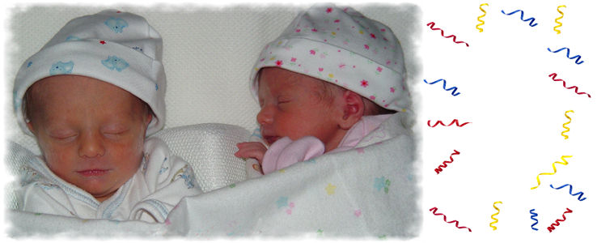

Meet Jack and Olivia Meet Jack and Olivia Born to my nephew Glenn and his beautiful wife Karin Born Dec. 29th 2004 The Joy of Twins Four little hands to guide and to hold, Two special lives to shape and to mold. Two little twins are gifts from above, Two special people to snuggle and love. author unknown See how we have grown at 12 weeks at Easter

jando_birth-frame